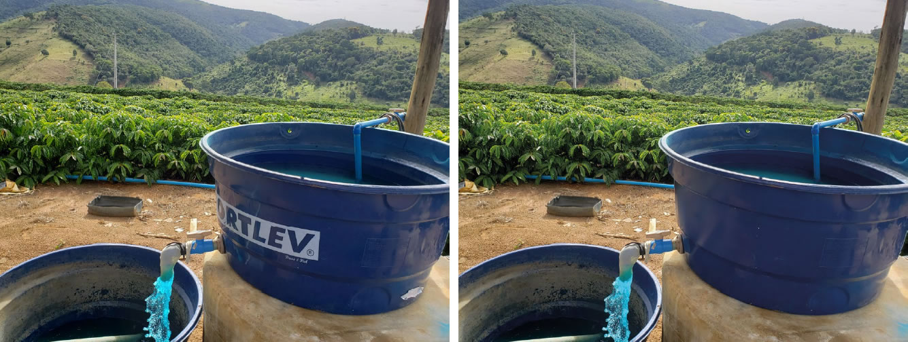
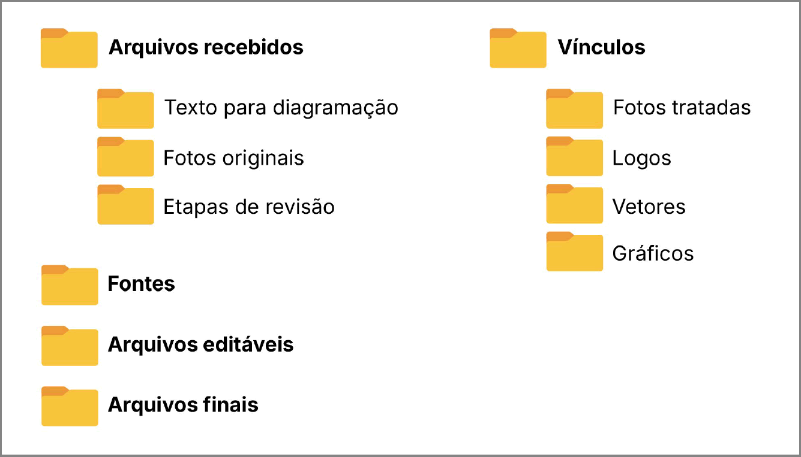
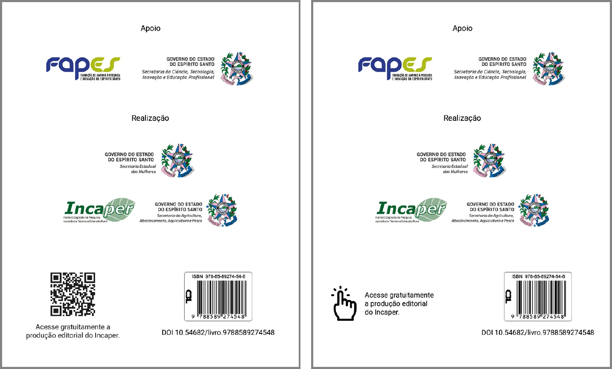
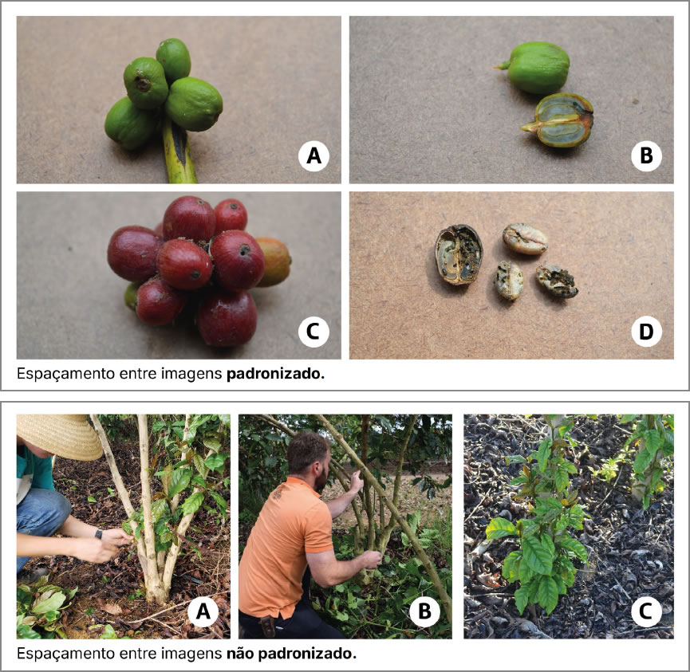
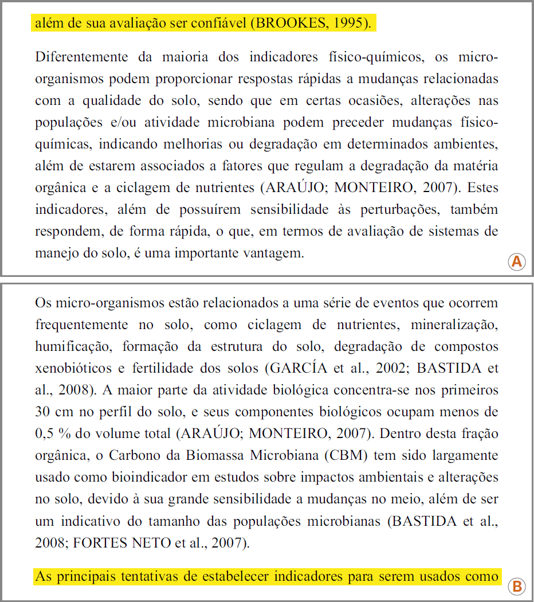
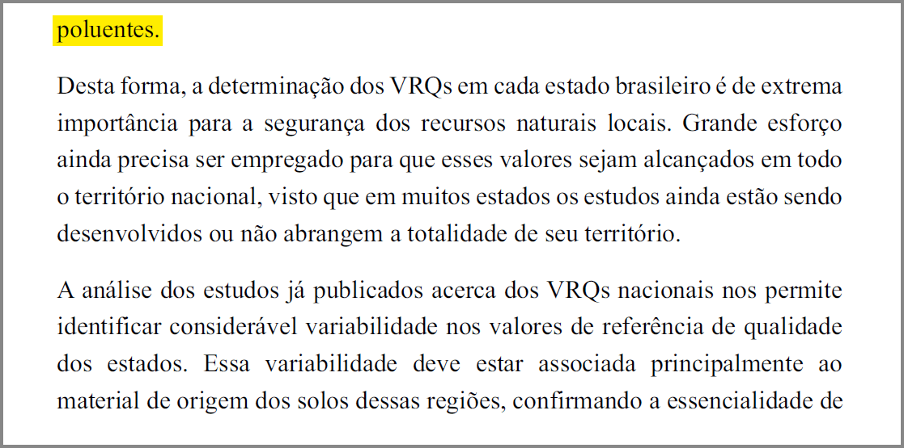
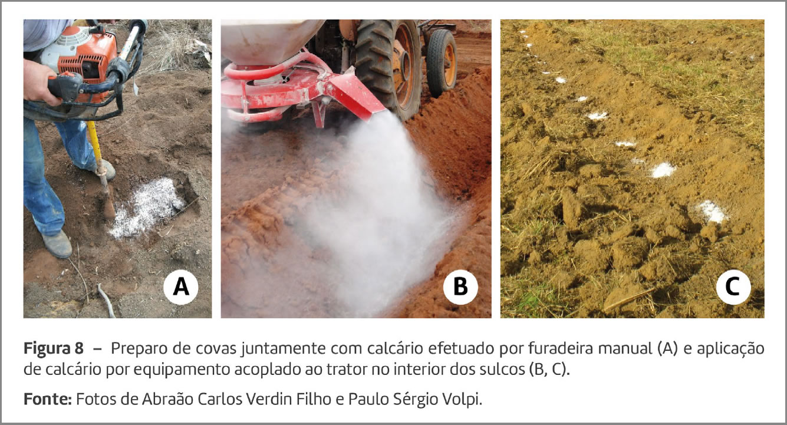
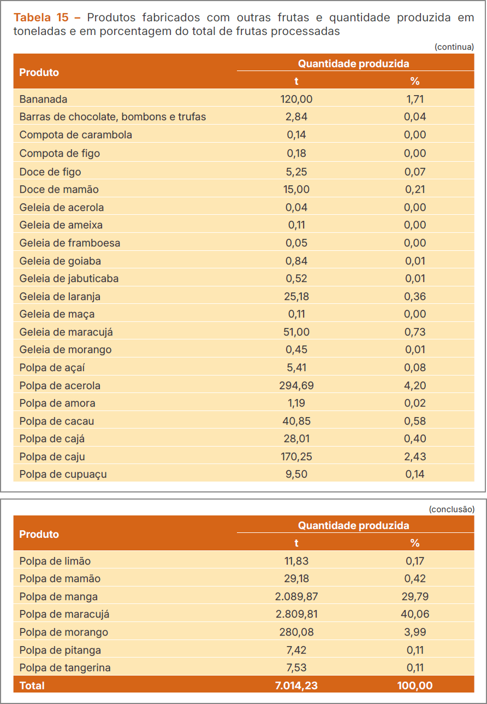
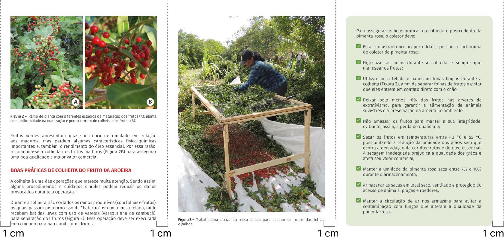

Estas orientações são destinadas aos designers responsáveis pela diagramação das publicações do Incaper, sejam eles servidores, bolsistas ou profissionais contratados. A experiência adquirida nas rotinas editoriais resultou na adoção de padrões que minimizam retrabalhos, evitam problemas na impressão e mantém a qualidade da produção editorial do Incaper.
Todas as contratações de impressão gráfica são realizadas por meio de coleta de preços. Assim, a cada publicação, pode haver uma gráfica diferente, aumentando a complexidade no controle de qualidade da impressão, razão pela qual evitamos o uso de técnicas que possam causar problemas.
9.1 ETAPAS PRÉ-DIAGRAMAÇÃO
9.1.1 Avaliação das imagens
Antes de iniciar a diagramação, é essencial avaliar a qualidade e a resolução de todas as imagens (fotos, ilustrações, logos, mapas, gráficos, entre outras). A resolução mínima recomendada para impressão é de 300 dpi. Se as imagens contiverem textos, é necessário verificar se elas estão legíveis e não estão pixeladas. Caso haja imagens com qualidade insuficiente, especialmente aquelas que afetem a legibilidade do texto, o designer deverá solicitar novas imagens.
As imagens da capa, em especial, devem ter alta qualidade para que o material impresso fique com aparência nítida e profissional.
9.1.2 Formato do documento
O Incaper possui uma lista de formatos padronizados para cada veículo de publicação (Quadro 1). No entanto, em casos excepcionais, por questões técnicas, ajustes poderão ser feitos. Geralmente, o formato da publicação já está definido no momento da contratação. Portanto, é necessário avaliar se o formato proposto é adequado ao conteúdo, garantindo que a largura da página acomode tabelas, gráficos e imagens sem prejudicar a legibilidade do texto.
| Veículo de publicação | Formato |
|---|---|
| Publicações seriadas periódicas | |
| Incaper em Revista | 21,5 cm (largura) x 26,0 cm (altura). |
| Boletim Agroclimático do Espírito Santo | A4 21,0 cm (largura) x 29,7 cm (altura). |
| Boletim da Conjuntura Agropecuária Capixaba | A4 21,0 cm (largura) x 29,7 cm (altura). |
| Relatório Anual de Gestão | A4 21,0 cm (largura) x 29,7 cm (altura). |
| Balanço Social | 21,5 cm (largura) x 26,0 cm (altura). |
| Anais Simpósio Incaper Pesquisa | A4 21,0 cm (largura) x 29,7 cm (altura). |
| Publicações seriadas não periódicas | |
| Circular Técnico-Científica | A4 21,0 cm (largura) x 29,7 cm (altura). |
| Documentos | 1) 15,0 cm (largura) x 21,0 cm (altura). 2) 23,0 cm (largura) x 20,5 cm (altura). 3) 21,0 cm (largura) x 29,7 cm (altura). |
| Anais de Eventos Científicos | A4 21,0 cm (largura) x 29,7 cm (altura). |
| Fôlder Técnico Fôlder Institucional |
1) 1 dobra:
|
| Cartilha | 1) 15,0 cm (largura) x 21,0 cm (altura). 2) 23,0 cm (largura) x 20,5 cm (altura). 3) 21,0 cm (largura) x 29,7 cm (altura). |
| Manual | 1) A4 21,0 cm (largura) x 29,7 cm (altura). 2) 23,0 cm (largura) x 20,5 cm (altura). 3) 15,0 cm (largura) x 21,0 cm (altura). |
| Folha Informativa | A4 21,0 cm (largura) x 29,7 cm (altura). |
| Publicações não seriadas | |
| Livro | 1) 15,5 cm (largura) x 23,0 cm (altura). 2) 15,0 cm (largura) x 21,0 cm (altura). 3) 21,0 cm (largura) x 28,0 cm (altura). 4) 17,5 cm (largura) x 23,0 cm (altura). |
| Cartas e Mapas | O formato de uma carta ou mapa pode variar dependendo do propósito, do tipo de informação representada e do meio em que será utilizado (físico ou digital). |
9.1.3 Logos
No que se refere ao uso de logos nas publicações do Incaper, é necessário observar dois pontos fundamentais: se a logo está atualizada e se tem resolução adequada.
Sempre que uma logo for fornecida para inclusão no documento, é necessário que o designer verifique se a versão recebida está atualizada. A forma adequada de fazer essa verificação é acessar o site da instituição e baixar a versão atualizada, caso necessário.
Outro ponto a ser observado é a resolução das logos recebidas. Se estiverem em baixa resolução e a instituição não fornecer a logo para download, o designer precisa solicitá-las ao profissional de contato indicado na contratação.
O ideal é que as logos sejam aplicadas em formato vetorial (AI, EPS ou PDF) para garantir a qualidade de impressão.
9.1.4 Gráficos
Quando possível, o designer deve redesenhar os gráficos a fim de padronizar as fontes (tipo e tamanho) e as cores. É fundamental verificar se a paleta de cores utilizada é suficientemente contrastante para a impressão, pois se a diferença de cores for muito sutil, pode resultar em gráficos difíceis de ler.
Caso não tenha recebido, o designer pode solicitar os gráficos em Excel, para que seja possível editá-los no Illustrator.
9.1.5 Ilustrações
As ilustrações utilizadas no documento devem ser avaliadas. Se estiverem com baixa qualidade, pixeladas ou possuírem textos com legibilidade ruim, elas devem ser redesenhadas no Illustrator e salvas em EPS na pasta vínculos.
9.1.6 Tratamento das imagens
Todas as imagens devem ser tratadas adequadamente antes de serem aplicadas na diagramação, mas sempre preservando os arquivos originais. É necessário criar uma pasta separada para armazenar as versões tratadas, evitando alterações nas imagens originais.
Como o Incaper produz documentos técnico-científicos, é necessário ter muito cuidado no tratamento das imagens. Por exemplo, uma alteração na cor das folhas ou dos frutos de plantas pode gerar a falsa impressão de doença ou de deficiência de nutrientes. Isso reforça a necessidade de manter as fotos originais caso seja necessário realizar novo tratamento de uma determinada imagem.
Imagens com marca d’água não devem ser usadas em nenhuma parte do documento, pois sua utilização pode resultar em imagens com aparência “lavada” na impressão.
A data automática de celular e as logomarcas devem ser retiradas das imagens (Figura 9). O Incaper não deve fazer propaganda de marcas, a não ser que seja o objetivo (exemplo: matéria sobre produto da agroindústria, café artesanal, feiras e eventos).

Fonte: Foto de Abraão Carlos Verdin Filho.
9.1.7 Software e organização dos arquivos
Todas as publicações do Incaper devem ser diagramadas no InDesign, inclusive as capas, pois esse software permite melhor ajuste de lombada nas capas de livros.
Já os elementos vetoriais (gráficos, infográficos, mapas, ilustrações) devem ser produzidos no Illustrator. Antes de iniciar o trabalho, o ideal é criar as pastas para manter todos os arquivos organizados. No final da diagramação, é necessário enviar a pasta completa de arquivos ao setor responsável no Incaper. Essa pasta deve conter as seguintes subpastas:
- Arquivos recebidos: todos os arquivos de texto, fotos originais, e PDFs com as etapas de revisão.
- Fontes: todas as fontes (sempre gratuitas) utilizadas no documento.
- Vínculos: fotos tratadas, vetores, logos, gráficos. No caso de livros e documentos com muitos vínculos, é fundamental separar cada tipo em uma pasta.
- Arquivos editáveis: arquivos em InDesign, miolo e capa.
- Arquivos finais: PDFs fechados para impressão e versão digital (PDF ou ePub).

9.2 DIAGRAMAÇÃO
9.2.1 Capa
- Logo do Incaper
Na capa, deve ser aplicada apenas a logo do Incaper, posicionada na parte inferior, de forma centralizada ou alinhada à direita. Consequentemente, a logomarca da Seag e o brasão do governo do estado não devem ser usados.
A escolha entre as versões branca, preta ou verde da logo depende do fundo utilizado, de forma a garantir contraste suficiente e visibilidade da marca. Todas as versões da logo do Incaper estão disponíveis no seguinte link: https://incaper.es.gov.br/logotipos-2.
- Títulos
Títulos excessivamente longos ou sem foco no tema central podem comprometer a legibilidade da capa, especialmente quando a imagem é exibida em formato reduzido, como em miniaturas no site. Por isso, é fundamental que o título destaque claramente o assunto principal da publicação e, quando necessário, seja reduzido e/ou dividido em título e subtítulo. Se for preciso fazer adequação do título à diagramação, o autor deve ser consultado para discutir os possíveis ajustes.
O título deve ocupar a maior parte da largura da página e ser aplicado em fonte bold, garantindo que tenha o destaque necessário.
Na Figura 11, é possível ver a diferença de legibilidade entre títulos que destacam o tema central (A e B) e um exemplo com título excessivamente longo (C).
9.2.2 Contracapa
A contracapa deve conter:
1Logo do Incaper utilizada na sua versão institucional completa, acompanhada do nome da Secretaria da Agricultura (Seag) e do brasão do governo do estado.
2 Na versão impressa: QR code para acesso ao site da Editora Incaper, acompanhado da frase “Acesse gratuitamente a produção editorial do Incaper”, centralizado abaixo do QR code.
Na versão online: a frase acima deve ser disponibilizada como link clicável, acompanhada do ícone de um mouse.
3ISBN, código de barras e DOI, conforme Figura 12.

9.2.3 Ficha catalográfica
Na diagramação da ficha catalográfica, deve ser utilizada a mesma fonte (cor e tipo) do restante da página do expediente.
9.2.4 Tipografia
É necessário utilizar fontes e paletas de cores que garantam a legibilidade do texto. Para materiais que serão impressos, deve-se evitar fundos escuros com texto branco ou claro. Esse tipo de aplicação pode gerar problemas de registro na impressão se a gráfica não tiver uma excelente qualidade.
As fontes utilizadas no documento devem obedecer aos seguintes critérios:
1 Gratuitas (livres de direitos autorais).
2 Fontes do tipo open type (extensão OTF). Essa versão inclui mais caracteres especiais, que são menos suscetíveis a erros de compatibilidade.
3 Família com vários pesos (no mínimo regular, bold, italic, bolditalic).
O ideal é utilizar, no máximo, duas famílias, uma para o corpo do texto e outra para os títulos. Não devem ser utilizadas muitas fontes distintas, pois o excesso deixa a diagramação pesada.
No corpo do texto, deve-se utilizar, preferencialmente, o preto 90%. Nos títulos e subtítulos, a cor pode variar de acordo com o projeto gráfico.
9.2.4.1 Tamanho mínimo das fontes do documento
- No corpo do texto: 11 pts;
- Nas legendas e fontes das figuras: 10 pts;
- No expediente: 8 pts.
O tamanho da fonte deve ficar um ponto menor que o utilizado no corpo do texto, nos seguintes casos:
- títulos de tabelas e quadros;
- textos das legendas;
- fontes de tabelas, quadros e figuras.
9.2.5 Diretrizes para formatação e estilo editorial
1 Os seguintes elementos sempre devem iniciar em página ímpar: falsa folha de rosto, folha de rosto, dedicatória, lista de organizadores e autores, agradecimentos, prefácio, apresentação, primeira página do sumário, início de capítulo, referências, apêndices e anexos.
2 O mesmo espaçamento entre imagens de uma figura deve ser mantido em todo o documento, como na Figura 13.

Fonte: Adaptado de Verdin Filho et al., 2025.
3 Efeitos indesejáveis de diagramação devem ser corrigidos, tais como:
- Linhas viúvas ou órfãs no documento, ou seja, uma linha isolada no início ou no fim de um texto, devem ser evitadas (Figura 14).

- Palavras viúvas (forcas) (Figura 15).

- Espaçamento reduzido entre palavras.
- Compactação de palavras.
- Recuo da primeira linha de parágrafo fora de padrão do documento.
- Repetição de palavras inteiras no fim de três ou mais linhas seguidas.
- Repetição de hífen em três ou mais linhas seguidas.
- Numeral no fim de uma linha e o símbolo da unidade de medida no início da linha seguinte.
4 Figuras compostas por várias imagens devem ser identificadas por letras (A, B, C etc.). Essas letras devem ser localizadas no canto inferior direito sobre um círculo de cor branca e ter fonte em preto ou outra cor escura (Figura 16). Já as legendas devem ser posicionadas na parte inferior das figuras, seguidas de fonte (indicação do autor ou do local de origem da imagem) e notas explicativas, quando houver.

5 Em revistas, livros fotográficos e fôlderes, os créditos de autoria das fotos devem
ser colocados sobre a imagem, com fonte 8 ou 9, em cor branca se a imagem for
escura ou de 90% a 100% preto se for uma foto clara.
Em documentos técnicos, o crédito de autoria das fotos já virá inserido no arquivo
em Word, no expediente ou imediatamente abaixo da legenda das imagens.
6 Em quadros e tabelas, os títulos devem ser posicionados na parte superior. Já
as legendas devem ser posicionadas na parte inferior, seguidas de fonte e notas
explicativas, quando houver.
Quando o quadro ou a tabela ultrapassarem as dimensões de uma página, deverão
continuar nas páginas seguintes (Figura 17). Além de repetir o cabeçalho em cada
página, é necessário inserir, na parte superior direita do quadro ou da tabela e
entre parênteses, as seguintes informações:
- (continua) para a primeira página;
- (continuação) para as demais páginas; e
- (conclusão) para a última página.

Fonte: Adaptado de Galeano et al. (2022).
9.2.6 Definição de margens mínimas na diagramação
- Livros, revistas, cartilhas e documentos
Para esses veículos de publicação, as margens devem ter, no mínimo, 15 mm. Nos casos em que a publicação for impressa, com acabamento colado, a margem interna deve ter, no mínimo, 25 mm, para garantir o espaço necessário para a cola, no processo de encadernação. Nesse espaço de margem, não deve haver nenhum tipo de texto.
- Fôlderes
Em publicações desse tipo, todas as margens devem ter, no mínimo, 10 mm.

Fonte: Adaptado de Ruas et al., 2024.
9.2.7 Paginação
A paginação vai variar de acordo com a forma em que a publicação for disponibilizada:
- Digital: a numeração deve ser posicionada na parte inferior direita da página.
- Impressa: a numeração deve ser colocada na parte inferior esquerda para páginas pares e na parte inferior direita para as páginas ímpares.
9.3 LISTA DE VERIFICAÇÃO (CHECKLIST) APÓS A DIAGRAMAÇÃO
Antes de enviar o arquivo diagramado para avaliação ou revisão textual, é essencial verificar os itens abaixo:
Tipografia
- Fonte
Cada grupo de texto (corpo, títulos, subtítulos, legendas, tabelas etc.) está com o mesmo tipo, tamanho e cor de fonte?
- Pasta de fontes
Foi criada uma pasta com as fontes utilizadas no documento? Esse procedimento evitará problemas futuros se o trabalho for reeditado.
Parágrafos
As linhas apresentam palavras com espaçamento adequado, sem lacunas excessivas ou espaços reduzidos?
- Espaçamento entre palavras
Há linhas viúvas e órfãs?
Linha órfã: primeira linha que aparece isolada na parte inferior de uma página ou coluna.
Espaçamentos e Alinhamento
- Imagens e textos
Os espaçamentos entre textos e imagens estão padronizados em todo o documento? Não deve haver espaçamentos irregulares que quebrem a harmonia visual.
- Alinhamento de imagens
Todas as imagens estão corretamente alinhadas e com as legendas posicionadas de maneira uniforme?
- Margens e áreas de segurança
As margens estão corretas e respeitando as áreas de segurança para impressão?
Referências e Estilo
- Referências bibliográficas
As referências estão com o estilo correto? Itálicos, negritos e outros estilos de formatação foram mantidos corretamente durante a importação do texto?
- Títulos de seções e subseções
As divisões de seções e subseções estão claras e hierarquicamente bem destacadas?
Imagens
- Qualidade das imagens
Todas as imagens possuem resolução adequada (mínimo de 300 dpi)? As imagens e ilustrações estão todas no padrão de cores CMYK no caso de impressão gráfica? As imagens não devem estar pixeladas ou com baixa qualidade.
- Tratamento das imagens
As imagens foram tratadas corretamente? Cores, brilho, contraste e saturação foram ajustados para evitar distorções e manter uma padronização das imagens no documento?
- Créditos das imagens
Os créditos das imagens (quando necessário) estão corretos, com fonte legível e posicionamento adequado?
Diagramação
- Elementos gráficos
Todos os gráficos, quadros, tabelas e infográficos estão de acordo com o projeto gráfico, legíveis e com fontes padronizadas?
- Consistência no uso de cores
As cores estão de acordo com o projeto gráfico, e há contraste suficiente para garantir a legibilidade, especialmente em gráficos, quadros e tabelas?
- Legendas em figuras
Todas as legendas de figuras estão posicionadas na parte inferior?
- Títulos de quadros e tabelas
Todos os títulos de quadros e tabelas estão posicionados na parte superior?
- Margem de segurança
Todos os elementos importantes, como logos, textos e imagens estão posicionados dentro da área segura de impressão?
Organização dos arquivos
- Estrutura de pastas:
Todos os arquivos relacionados ao projeto, tais como fontes, imagens, gráficos, documentos auxiliares e arquivos editáveis estão organizados corretamente em pastas (seção 9.1.7)?
9.4 CORREÇÕES DA REVISÃO TEXTUAL
O PDF diagramado passará por várias etapas de revisão, durante as quais o revisor fará anotações diretamente no documento para que o designer execute as correções necessárias. É essencial que o designer faça uma cópia do PDF com as notas de revisão e vá apagando cada nota à medida que realiza as alterações no arquivo no InDesign. Esse processo garante que todas as correções sejam feitas e evita que algo seja esquecido.
O principal retrabalho nesta etapa de revisões ocorre quando o designer devolve o arquivo com correções não realizadas. Portanto, é fundamental que o profissional siga rigorosamente as anotações e faça uma conferência minuciosa antes de enviar a versão corrigida.
9.5 FINALIZAÇÃO DO DOCUMENTO
9.5.1 Exportação para impressão offset
- 1. O arquivo deve ser exportado no formato PDF X-1a, marcando a opção “Todas as marcas da impressora” (corte, registro, sangria, barra de cores e informações da página). Esse formato é o padrão para impressão e garante que todos os elementos do seu arquivo sejam preservados corretamente.
- 2. Antes de enviar o arquivo para impressão, uma revisão completa do material deve ser realizada, para garantir que não ocorreram erros na exportação.